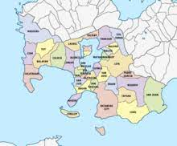
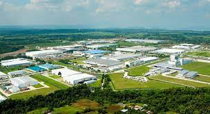
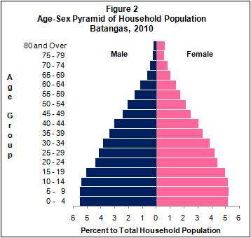
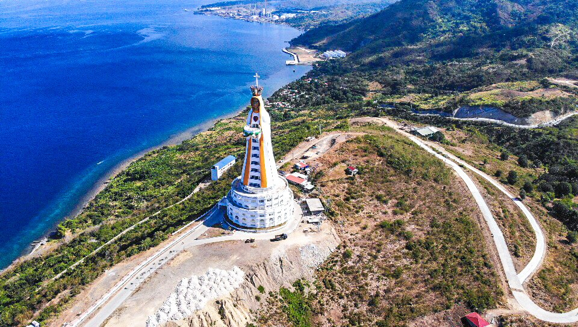
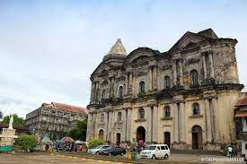
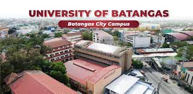
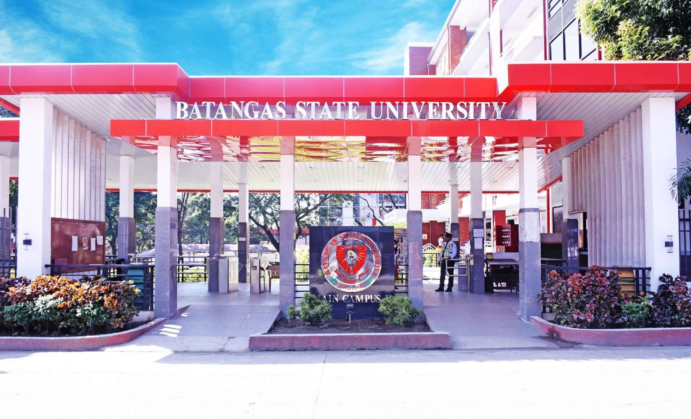

HISTORY OF BATANGAS
Batangas (Tagalog: Lalawigan ng Batangas), (Spanish: Provincia de Batangas), is a first class province of the Philippines located on the southwestern part of Luzon in the CALABARZON region. Its capital is Batangas City and it is bordered by the provinces of Cavite and Laguna to the north and Quezon to the east. Across the Verde Island Passages to the south is the island of Mindoro and to the west lies the South China Sea. Poetically, Batangas is often referred to by its ancient name Kumintang.
Batangas is one of the most popular tourist destinations near Metro Manila. The province has many beaches and is famous for excellent diving spots including Anilao in Mabini, Sombrero Island in Tingloy, Ligpo Island in Bauan, these areas more popularly known as Anilao. Matabungkay in Lian, Punta Fuego in Nasugbu, Calatagan and Laiya in San Juan.
Batangas is also where Taal Volcano, one of the Decade Volcanoes is located. It is also where the Taal Heritage town lies, a small picturesque town that has ancestral houses and structures dating back to the 19th century.
Batangas has the second largest international seaport in the Philippines after Metro Manila. The identification of the city as an industrial growth center in the region and being the focal point of the CALABARZON program resulted to the increasing number of business establishments in the city’s Central Business District (CBD) as well as numerous industries operating at the province’s industrial parks.
Etymology
The first recorded name of the Province was Kumintang, after the Datu who inherited the dominion from Datu Balensusa. Its centre, the present day Balayan, was the most progressive town of the Province and the traditional centre of governance. Later, as the eruption of the Taal Volcano destroyed a significant portion of the town, the provincial centre was transferred toTaal, which was then called Bonbon and the name of the province was changed after that of the town.
The term batangan means a raft, the people used so that they could fish in the nearby Taal Lake. It also meant the numerous logs found in the Calumpang River, the body of water that runs through the northeastern portion of the town and assumes the shape of a tuning fork.
People
The dialect of Tagalog spoken in the province closely resembles the Old Tagalog spoken before the arrival of the Spanish. Hence the Summer Institute of Linguistics called this province the Heartland of the Tagalog Language. A strong presence of the Tagalog culture is clearly visible to the present day.
Linguistically Batangueños are also known for their unique affectation of often placing the particles eh or ga (equivalent of particle ba Filipino), usually as a marker of stress on the sentence, at the end of their spoken sentences or speech; for example: “Ay, oo, eh!” (“Aye, yes, indeed!”). Some even prolong the particle ‘eh’ into ‘ala eh’, though it really has no meaning in itself.
In the recent years, waves of migration from the Visayas had brought significant number of Visayans to the province. There are also a few who can speak Spanish, since Batangas was an important centre during the colonial period.
Batangas also has one of the highest literacy rates in the country at 96.5%, wherein the males have a slightly higher literacy rate at 97.1% than females with 95.9%.Combined average of literacy is 96%.
The dialect of Tagalog spoken in the province closely resembles the Old Tagalog spoken before the arrival of the Spanish. Hence the Summer Institute of Linguistics called this province the Heartland of the Tagalog Language. A strong presence of the Tagalog culture is clearly visible to the present day.
Linguistically Batangueños are also known for their unique affectation of often placing the particles eh or ga (equivalent of particle ba Filipino), usually as a marker of stress on the sentence, at the end of their spoken sentences or speech; for example: “Ay, oo, eh!” (“Aye, yes, indeed!”). Some even prolong the particle ‘eh’ into ‘ala eh’, though it really has no meaning in itself.
In the recent years, waves of migration from the Visayas had brought significant number of Visayans to the province. There are also a few who can speak Spanish, since Batangas was an important centre during the colonial period.
Batangas also has one of the highest literacy rates in the country at 96.5%, wherein the males have a slightly higher literacy rate at 97.1% than females with 95.9%.Combined average of literacy is 96%.
GEOGRAPHY
Batangas' landscape is largely of plains dotted by mountains, including one of the world's smallest volcanoes, Mt. Taal, with an elevation of 600 metres (2,000 ft), located in the middle of the Taal Lake. Other important peaks are Mount Macolod with an elevation of 830 metres (2,720 ft), Mt. Banoy with 960 metres (3,150 ft), Mt. Talamitam with 700 metres (2,300 ft), Mt. Pico de Loro with 664 metres (2,178 ft), Mt. Batulao with 693 metres (2,274 ft), Mt. Manabo with 830 metres (2,720 ft), and Mt. Daguldol with 672 metres (2,205 ft).
Batangas has several islands, including Tingloy, Verde Island (Isla Verde), and Fortune Island of Nasugbu.
According to Guinness World Records, the largest island in a lake on an island is situated in Batangas (particularly at Vulcan Point in Crater Lake, which rests in the middle of Taal Island in Lake Taal, on the island of Luzon).

ECONOMY OF BATANGAS CITY
The provincial government of Batangas has identified several key industries which, if properly cultivated and developed, have the potential to propel the local economy to unprecedented heights.
In an interview on Monday, Governor Hermilando Mandanas said his administration will focus on growing the tourism, commercial fishing, logistics services, and information and communications technology (ICT) sectors in the next few years.
Mandanas said efforts are underway to further capitalize on Batangas’ rich history and natural resources to grow the tourism industry and other tourism-related businesses.
He said the Verde Island Passage (VIP), Taal Volcano and the Taal Basilica are the province’s star attractions.
“We have the best marine life found in the VIP and we are proud that we have the world-renowned Taal Volcano, as well as the largest church in Asia, the Taal Basilica,” he added.
Mandanas said partnerships recently forged with the private sector put the province in a good position to entice these businesses and support their operations.
“We are the most powerful province in terms of the size of our power plants. We are the gateway of our nautical highway and agro-industrial [companies]… we are also recognized as the Asean logistics hub,” he said.
Mandanas said he recently met with representatives of the Philippine Fisheries Development Authority to discuss the construction of a regional food terminal in the province.
The provincial government has also strengthened its investment strategy, planning and information technology to help increase the economic growth during the first Batangas Local Economic Development and Investment Promotions (LEDIPO) Conference last week.
Meanwhile, the “Paskong Batangueño sa Kapitolyo” (Batangueño-style Christmas at the Capitol), which was launched on Saturday, signals an attempt to capture a bigger portion of the country's holiday tourism market.
As part of the holiday activities at the capitol, the Office of the Provincial Agriculturist (OPAg) is holding the “Barakahan sa Kapitolyo” (Camaraderie at the Capitol), a month-long community market and food park to support local producers, farmers and fisherfolk. (PNA)

DEMOGRAPHICS OF BATANGAS
Batangas is a province in the Philippines situated in the CALABARZON region occupying the central section of Luzon Its capital is the City of Batangas.The province has a land area of 3,115.05 square kilometers or 1,202.73 square miles.Its population as determined by the 2020 Census was 2,908,494. This represented 17.96% of the total population of the CALABARZON region, 4.68% of the overall population of the Luzon island group, or 2.67% of the entire population of the Philippines.< Based on these figures, the population density is computed at 934 inhabitants per square kilometer or 2,418 inhabitants per square mile.

TOURISMS AND ATTRACTION
Milea Bee Farm
Milea Bee Farm is located on Kurba Road, Lipa Batangas, about 21 km away from Batangas City. The farm attracts many visitors due to its authenticity and serene environment and is one of the top farm destinations in the Philippines. The farm does not feel like a tourist trap as it advocates bee propagation, beekeeping education, and agricultural sustainability.
Monte Maria Shrine
Monte Maria is not just a shrine but an international pilgrimage and conference center built in honor of the Virgin Mary. Formally known as Montemaria International Pilgrimage and Conference Center, the complex spans 8 hectares and is situated 20 kilometers outside of Batangas City.Monte Maria is one of the top Batangas tourist spots because of its uniqueness. It is meant to be both a religious and tourism site. Although devotees and pilgrims are attracted to it, Monte Maria caters to regular tourists as well.

Caleruega Church
Caleruega Church is one of the most famous churches in Batangas. This property is perched on the highest hill of Nasugbu Town. Caleruega is named after a Spanish municipality.
Caleruega Church has beautiful architecture and a tranquil natural environment that makes it ideal for religious activities and spiritual retreats. In fact, it has become a well-known wedding venue.
Fantasy World
Fantasy World was meant to be the Philippine version of Disneyland. It’s supposed to be the largest and grandest theme park in the country. However, this ambitious project has remained unfinished. Fantasy World has never opened as a theme park. According to local stories and rumors, the Japanese owner had financial problems and, therefore, stopped the construction years ago.
Taal Basilica
Taal Basilica’s official name is Basilica of St. Martin de Tours. It stands on top of a hill at the center of Taal Town. This basilica is huge; it is 96 meters high and 45 meters wide. It is often referred to as the largest Catholic Church in Asia.
Taal Basilica was reconstructed several times in the 19th century. Its Baroque appearance today is attributed to architect Luciano Oliver, who redesigned the church in 1856.

SCHOOLS AND UNIVERSITIES
University of Batangas
is a private university, basic and higher education institution located in Batangas City, Philippines. Founded in 1946 as Western Philippine College, it is the oldest university and second-oldest educational institution in Batangas

Batangas State University
is a state university in the province of Batangas, Philippines. Established in 1903 as a training school, Batangas State University is the oldest higher education institution in the region.

THANK YOU!!😁